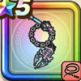

百獣の暗黒鞭
攻略班 8.0点 / スパークショット双竜打ちメタル切り裂き打ちダークネスフレアビーストソウル
くわしい特徴
【レベル別習得スキル】 Lv1【まもマス】きようさ+5 Lv1【レンジャー】すばやさ+5 Lv1スパークショット（消費MP：5）敵1体に威力120%のイオ属性体技ダメージを与えたまに幻でつつみこむ Lv10双竜打ち（消費MP：18）敵1体に威力150%の体技攻撃を2回し、たまに守備力を1段階下げる Lv15メタル切り裂き打ち（消費MP：26）敵全体にメタル系なら+15ダメージを与え、それ以外には威力350%の体技ダメージを与える Lv20ダークネスフレア（消費MP：41）敵全体にドルマ属性のブレス特大ダメージを与える Lv30悪魔系へのダメージ+5% Lv35鳥系へのダメージ+5% Lv40攻撃力+12 Lv45【まもマス】戦闘終了時にMPを6回復する Lv50ビーストソウル（消費MP：6）戦闘開始時に「ビーストソウル」を宿す。行動開始時に1度だけ「ビーストソウル」を解放し、3種のモンスターのいずれかの力を引き出す 【限界突破スキル】 1凸スキルの斬撃・体技・ブレスダメージ+5% 2凸スキルの斬撃・体技・ブレスダメージ+5% 3凸スキルの斬撃・体技・ブレスダメージ+5% 4凸スキルの斬撃・体技・ブレスダメージ+5%